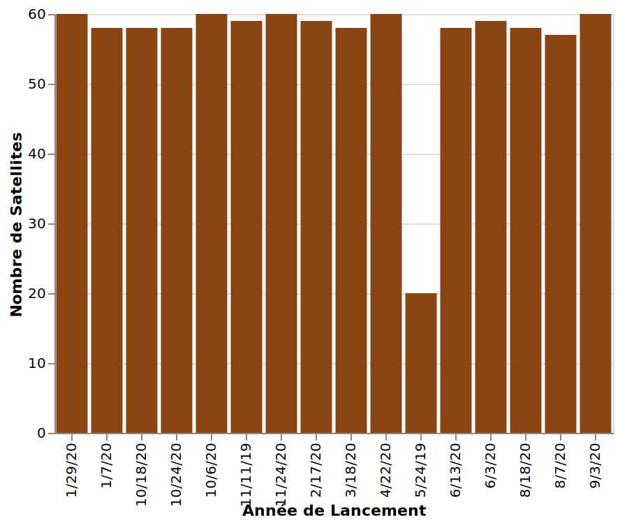
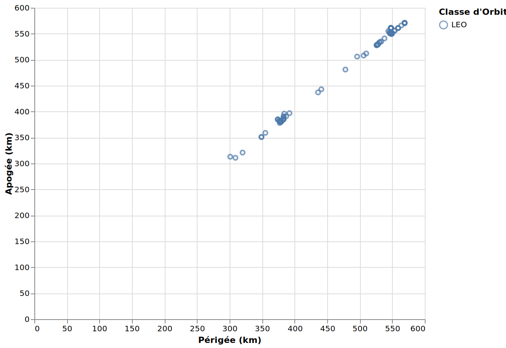
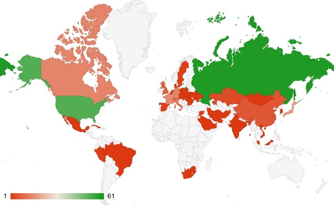
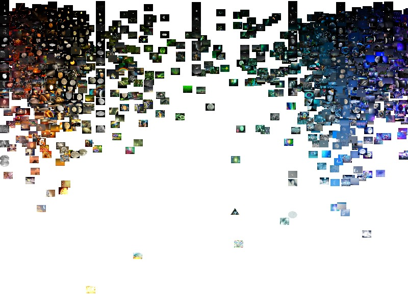
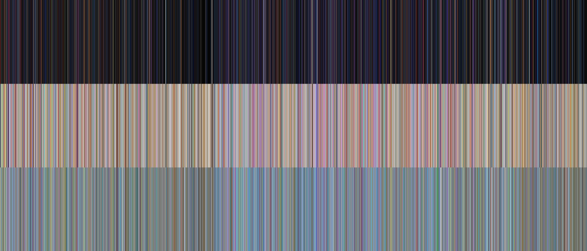

Données Quantitatives et Catégorielles
La première visualisation présente un graphique en bâton illustrant l'évolution du nombre de satellites envoyés au fil des années. Les barres verticales représentent chaque année, offrant une représentation visuelle claire de l'activité spatiale au fil du temps. Ce graphique permet de visualiser les fluctuations et les tendances dans le lancement de satellites, offrant ainsi une perspective dynamique sur le développement spatial au fil des années.
NB : Le premier véritable satellite, Courrier B, fut lancé en octobre 1960. Il était doté d'équipements électroniques, permettant de recevoir puis d'amplifier le message avant de le réémettre. Il ne fonctionna que 17 jours. Le satellite Telstar, (juillet 1962) fut une réussite beaucoup plus probante.
La deuxième visualisation présente un graphique en dispersion mettant en évidence les données de périgée et d'apogée des orbites. Les points dispersés sur le graphique représentent différentes orbites, avec les axes horizontal et vertical indiquant respectivement les valeurs de périgée et d'apogée en kilomètres. En haut à droite, une légende intitulée 'Classe d'orbite' offre une référence pour interpréter les différentes catégories d'orbites représentées sur le graphique. Cette visualisation permet d'explorer la diversité des orbites spatiales en fonction de leurs caractéristiques spécifiques
Base de donnéesNB : Le périgée d'un satellite de la Terre est le point de son orbite qui est le plus proche du centre de la Terre. Le point qui en est le plus loin est l'apogée
Données Spatiales ou Temporelles
Naviguez à travers cette carte où les nuances de vert traduisent une intense activité spatiale, indiquant des nations qui ont massivement contribué à l'exploration de l'espace. En revanche, les zones teintées de rouge signalent des niveaux d'activité plus modestes. Cette représentation visuelle vous offre un aperçu dynamique de la répartition mondiale des lancements satellitaires, mettant en évidence les disparités entre les nations dans leur engagement envers l'exploration spatiale. Explorez cette cartographie unique pour découvrir les contributions de chaque pays à la conquête spatiale.
Base de donnéesNB : Les satellites observent la couche nuageuse pour nous aider à faire des prévisions météo, renseignent les militaires sur des zones de conflit difficiles d'accès, transmettent la télévision, ou encore cherchent des informations sur notre Univers.
Données Non-Structurées
Transportez vous au cœur d'un spectacle cosmique époustouflant. Cette image de données non structurées capture la magnificence de l'univers, regorgeant de planètes mystérieuses, d'étoiles scintillantes et d'objets célestes fascinants. Chaque élément lumineux et chaque recoin de l'image révèlent la diversité infinie de notre cosmos. Explorez cette galaxie visuelle et plongez dans l'émerveillement de la complexité cosmique qui nous entoure.
NB : L'Univers, au sens cosmologique, est l'ensemble de tout ce qui existe, décrit à partir d'observations scientifiques et régi par des lois physiques. La cosmologie cherche à appréhender l'Univers d'un point de vue scientifique, comme l'ensemble de la matière et de l'énergie distribuées dans l'espace-temps.
Plongez dans l'essence même de l'espace avec cette image captivante de données non structurées, représentée sous la forme d'un code-barres cosmique. Chaque trait et chaque espace dans ce code-barres renferment des informations mystérieuses sur notre univers. Chaque variation de largeur, chaque nuance de couleur, raconte une histoire unique, un fragment de la vaste connaissance de l'espace. Explorez ce code-barres stellaire, décodant les secrets de l'infini à travers une représentation visuelle intrigante et artistique.
Base de donnéesNB : La notion de « non structurées » désigne le fait qu'il s'agit de jeux de données (grands ensembles de fichiers typiques) stockés sans format de base de données structurée.